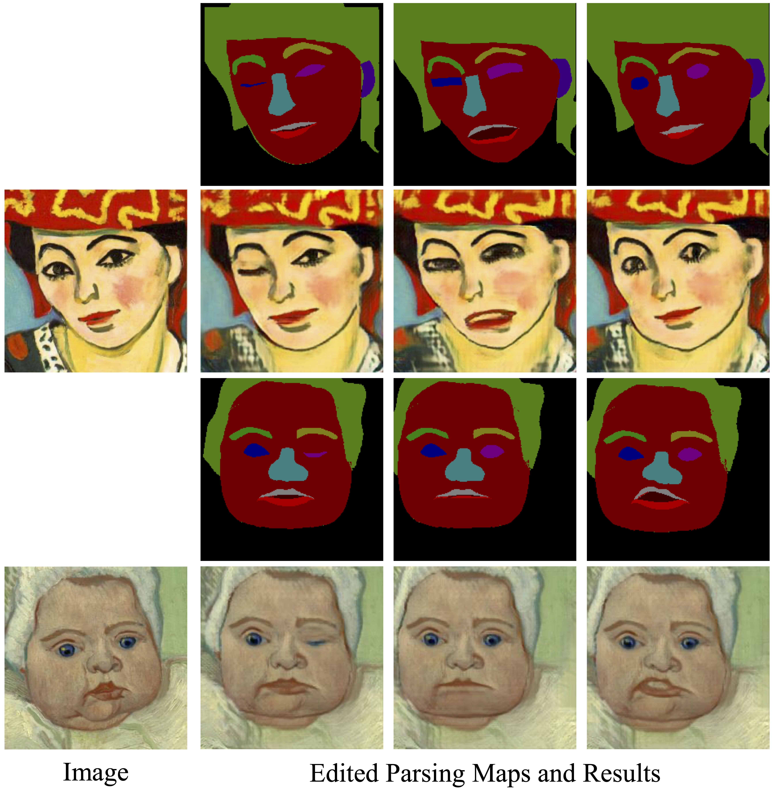
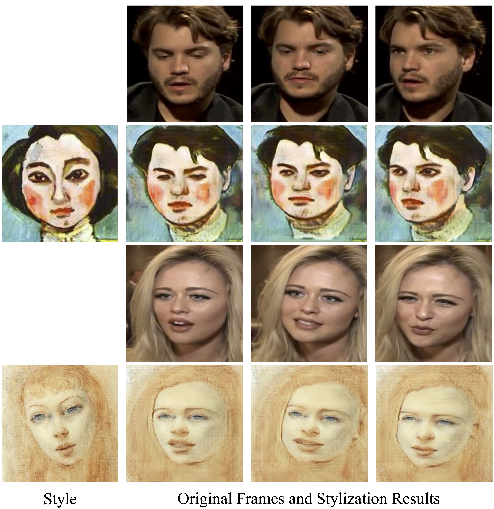

Abstract
Large-scale datasets and deep generative models have enabled impressive progress in human face reenactment. Existing solutions for face reenactment have focused on processing real face images through facial landmarks by generative models. Different from real human faces, artistic human faces (e.g., those in paintings, cartoons, etc.) often involve exaggerated shapes and various textures. Therefore, directly applying existing solutions to artistic faces often fails to preserve the characteristics of the original artistic faces (e.g., face identity and decorative lines along face contours) due to the domain gap between real and artistic faces. To address these issues, we present ReenactArtFace, the first effective solution for transferring the poses and expressions from human videos to various artistic face images. We achieve artistic face reenactment in a coarse-to-fine manner. First, we perform 3D artistic face reconstruction, which reconstructs a textured 3D artistic face through a 3D morphable model (3DMM) and a 2D parsing map from an input artistic image. The 3DMM can not only rig the expressions better than facial landmarks but also render images under different poses/expressions as coarse reenactment results robustly. However, these coarse results suffer from self-occlusions and lack contour lines. Second, we thus perform artistic face refinement by using a personalized conditional adversarial generative model (cGAN) fine-tuned on the input artistic image and the coarse reenactment results. For high-quality refinement, we propose a contour loss to supervise the cGAN to faithfully synthesize contour lines. Quantitative and qualitative experiments demonstrate that our method achieves better results than the existing solutions
Method

An illustration of our two-stage pipeline for artistic face reenactment. It transfers the pose and expression of a real human face in a driving video \(\{I_d\}\) to an input artistic face \(I_s\) (with the help of manually labeled face landmarks \(L_s\) and parsing map \(P_s\)) to get an artistic talking head \(\{\hat{I}_{s,d}\}\).
Video
Comparisons with the Existing Methods

Artistic Portrait Editing
Face Video Stylization
BibTeX
@article{qu2023reenactartface,
title={Reenactartface: Artistic face image reenactment},
author={Qu, Linzi and Shang, Jiaxiang and Han, Xiaoguang and Fu, Hongbo},
journal={IEEE Transactions on Visualization and Computer Graphics},
year={2023},
publisher={IEEE}
}